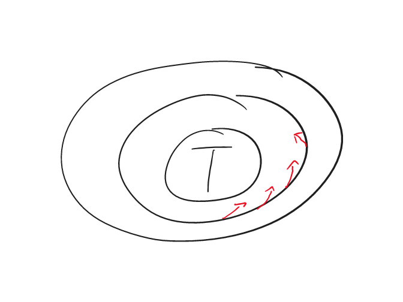
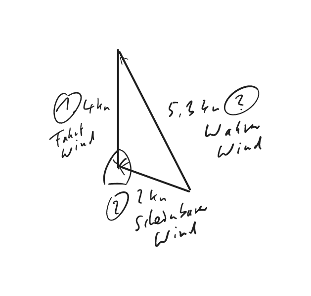
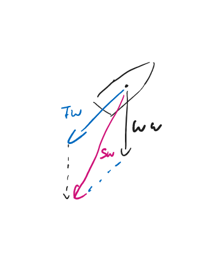
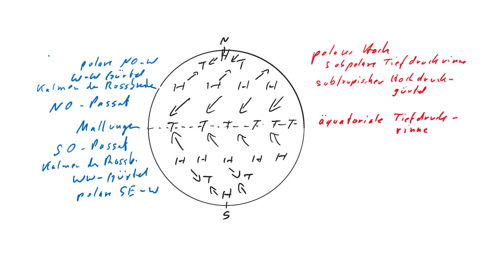
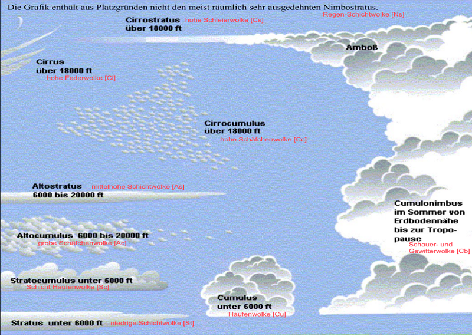
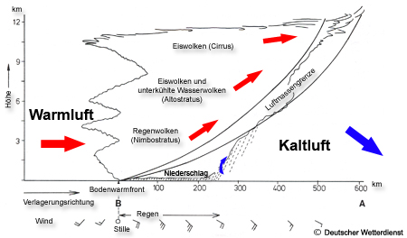
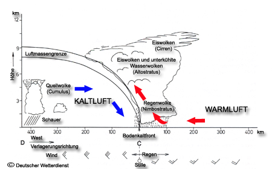
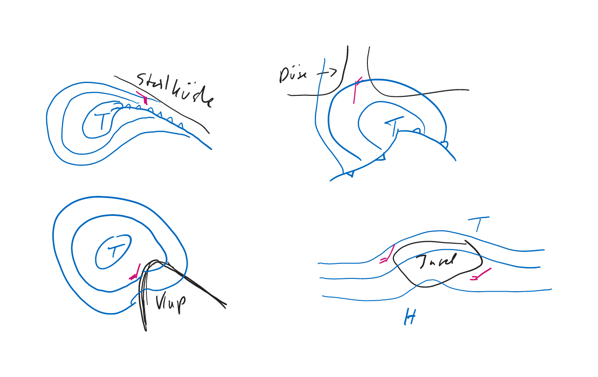
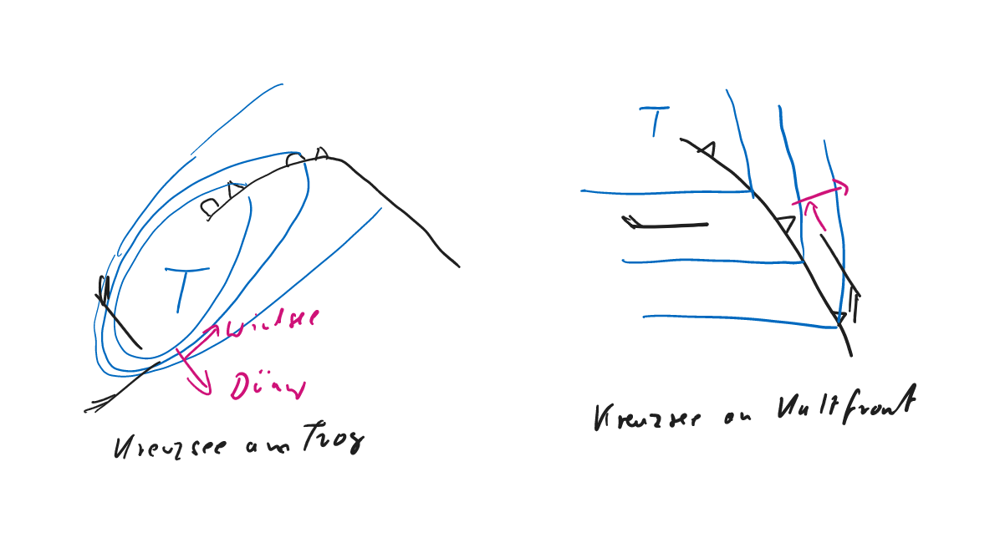

Wetter: Ist der augenblickliche Zustand der Atmosphäre am Betrachtungsort.
Witterung: Ist die Beschreibung eines über mehrere Tage anhaltenden Wettergeschehens, gekennzeichnet durch z.B. kalt, feucht.
Klima: ist die großräumige, langfristige Darstellung des mittleren Wetterverlaufs.
Die Grundelemente des Wettergeschehens sind: Luftfeuchte, Temperatur, Luftdruck
weitere Parameter: Windrichtung- und stärke, Wolkenbild und Niederschläge
Extremwerte in Deutschland: -35 bis +40 ohne Strahöungsanteil Extremwerte in Europa: +75 mit Strahlungsanteil
| Gebiet | Februar | August |
|---|---|---|
| Deutsche Bucht | 4 | 17 |
| Ostsee | 2 | 16 |
| Balearen | 13 | 24 |
Die unteren drei Schichten der Athmosphäre heißen Troposphäre (bis 10 km), Tropopause (Art Sperrschicht für Wolken) und Stratosphäre (10 bis 50 km)
Ein Flüssigkeitsbarometer ähnelt einem umgedrehten U, wobei es ein offenes und geschlossenes Ende besitzt. Es ist mit genau 760 Millimetern Quecksilber gefüllt. Im geschlossenen Ende ist ein Vakuum. Ändert sich der Luftdruck, wird das Quecksilber mehr oder weniger in das Vakuum gedrückt und die Höhe der Säule ändert sich. Auf einer Skala lässt sich dann der Luftdruck ablesen. Unter Normalbedinungen steht die Quecksilbersäule 76 cm hoch (= 760 mmHG, HG=chemisches Zeichen für Quecksilber)
Luftdruck entsteht als Folge der Gewichtskraft (Masse mal Beschleunigung) der Atmosphäre. Durch den Druck der über einer Fläche in einem beliebigen Höhenniveau befindlichen Luftschichten wird die darunter liegende Luftmasse zusammengepresst und dadurch in Spannung versetzt. Diese Spannung hält zur Gewichtskraft der Luft ein Gleichgewicht.
Allgemein: \[Druck\ (p) = \frac{Kraft}{Fläche}\]
\[1 Pascal\ (Pa) = \frac{1 Newton}{1 m²}\]
Isobaren sind Linien, die die Orte gleichen Luftdrucks miteinander verbinden. In den Wetterkarten sind Isobaren im Abstand von 5 hPa gezeichnet (In England 4 hPa)
Druckgradient und Drucktendenz
Druckgradient = Druckänderungen Streckenbezogen (s=Strecke), senkrecht zu den Isobaren in Richtung des höheren Drucks. Die Kraft (Gradientenkraft) wirkt genau entgegengesetzt zum Gradient.
\[Druckgradient = \frac{\Delta p}{\Delta s}\]
Der horizontale Druckgradient dient zur Bestimmung der Windstärke
Drucktendenz: Druckänderung zeitbezogen (t=Zeit) => Windstärkeänderung
\[Drucktendenz = \frac{\Delta p}{\Delta t}\]
Gutes Erklärvideo: Kraft auf Luft durch Druckunterschied
Gradient ist der Luftdruckunterschied in hPa auf einer Strecke von 60 sm senkrecht zu den Isobaren.
Berchnung des Gradienten: \[Druckgradient = \frac{\Delta hPa * 60}{Meilenabstand der Isobaren}\]
p nimmt mit der höhe über der Erdoberfläche ab. In einer Höhe von ca. 5400m beträgt p 500hPa. In Bodennähe gilt, dass ca. jede 8m p um 1hPa fällt. (vertigaler Druckgradient)
Der Wind wird in der Richtung angegeben aus der er kommt.
Wind ist bewegte Luft. Die Bewegung entsteht durch die Druckunterschiede zwischen Hoch- und Tiefdruckgebieten.
Skala für Windrichtung: 8-teilige Skala mit Auflösung in 45° Stufen.
Die Schwankung in der Windrichtung kann bis zu 45 Grad um die Haupt windrichtung betragen, also bei Formulierung “Nordwest” von Westnordwest (WNW) bis Nordnordwest (NNW). Es können Böen auftreten, die etwa 1 bis 2 Bft über dem Mittelwind liegen.
Die Stärke des Windes kann in m/s, km/h, kn (Seemeilen/h) ausgedrückt werden. Der DWD gibt entsprechend der seemännischen Praxis die Stärke häufig in Beaufort-Graden an. Im Allgemeinen wird man die Windstärke nach dem Seegang beurteilen.
Zuordnungen Windstärke/-geschwindigkeit
| Internationale Bezeichnung | Beaufort | Knoten |
|---|---|---|
| starker Wind | 6 | 24 (22-27) |
| stürmischer Wind | 8 | 37 (34-40) |
| Orkan | 12 | >=24 |
15 kn (1,5 Fiedern) = 3 + 1 = 4 Bft 40 kn = 8 Bft 50 kn = 10 Bft 60 kn (1 Dreieck + 1 Fieder) = 12 - 1 = 11 Bft
Regel: 1 Bft = 5 kn; bei 1 bis 7 Bft +1; bei 11 und 12 Bft -1
Die Corioliskraft bewirkt dass alle auf der Erde ablaufenden Bewegungen auf der Nordhalbkugel nach rechts abgelenkt werden. Auf der Südhalbkugel nach links. Am Äquator ist die Ablenkung Null und sie wächst mit zunehmender Breite.
Luft wird unter dem Einfluss der Gradientenkraft und der Corioliskraft parallel zu den Isobaren geführt (geostrophischer Wind). Auf See (wegen erdnaher Reibung) weicht der Wind um 22 Grad hin zum Tief ab.

Scheinkräfte die die Windgeschwindigkeit beeinflussen:
- Der Coriolis-Effekt dreht die Richtung des Windes rechtwinklig nach rechts, wenn man auf der Nordhalbkugel vom hohen zum tiefen Druck schaut (Nordhalbkugel). Bei gleichem Isobarenabstand ist durch den Coriolis-Effekt in niederen Breiten die Windgeschwindigkeit größer als in höheren Breiten.
- Die Reibungskraft verringert die Geschwindigkeit des Windes (auf 66% von der des geostrophischen Windes; Zahlenangabe nicht erforderlich!) und lenkt die Richtung über See um 22° zu den Isobaren zum tiefen Druck hin.
- Die Zentrifugalkraft verstärkt/verringert die Windgeschwindigkeit bei antizyklonal/zyklonal gekrümmten Isobaren gegenüber parallel verlaufenden Isobaren mit gleichem Isobarenabstand. Infolge der Zentrifugalkraft ist bei gleichem Isobarenabstand die Windgeschwindigkeit an Hochdruckgebieten größer als an Tiefdruckgebieten.
Die Höhe der Vorhersage für Bodenwind aus der Vorhersagekarte beträgt 10 m, die Einheit der Windgeschwindigkeit ist Knoten oder Beaufort für die Windstärke.
Der geostrophische Wind wird in den Bordwetterkarten 9 (Nord- und Ostsee)und 11 (Mittelmeer) mit einem geostrophisches Windlineal für einen Isobarenabstand von 10hPa angewandt.
Böhen sind Winde aus höheren Luftschichten. Windgeschwindigkeiten liegen bis zu 2 Bft über Mittelwinde. In der aufkommenden Bö ist der Wind rechtdrehend, in der abflauenden Bö rückdrehend (Nordhalbkugel).
Warnungen
Starkwindwarnung: Erwartung von 6 bis 7 Bft Sturmwarnung: Erwarung ab 8 Bft
- Der scheinbare Wind setzt sich zusammen aus wahrem Wind und Fahrtwind.


| Beaufort | Auswirkung auf die See |
|---|---|
| 0 | Spiegelglatte See. |
| 1 | Kleine schuppenförmig aussehende Kräuselwellen ohne Schaumkämme. |
| 2 | Kleine Wellen, noch kurz, aber ausgeprägter. Die Kämme sehen glasig aus und brechen nicht. |
| 3 | Die Kämme beginnen zu brechen. Der Schaum ist glasig. Vereinzelt können kleine weiße Schaumköpfe auftreten. |
| 4 | Die Wellen sind zwar noch klein, werden aber länger. Weiße Schaumköpfe treten schon ziemlich verbreitet auf. |
| 5 | Mäßige Wellen, die eine ausgeprägte lange Form annehmen. Weiße Schaumkämme bilden sich in großer Zahl. Vereinzelt kann schon etwas Gischt vorkommen. |
| 6 | Die Bildung großer Wellen beginnt. Überall treten ausgedehnte weiße Schaumkämme auf, häufig mit Gischt. |
| 7 | Die See türmt sich. Der beim Brechen der Wellen entstehende weiße Schaum beginnt sich in Streifen in Windrichtung zu legen. |
| 8 | Mäßig hohe Wellenberge von beträchtlicher Länge. Die Kanten der Kämme beginnen zu Gischt zu verwehen. Gut ausgeprägte Schaumstreifen. |
| 9 | Hohe Wellenberge, dichte Schaumstreifen. Das bekannte “Rollen” der See beginnt. Die Gischt kann die Sicht beeinträchtigen. |
| 10 | Sehr hohe Wellenberge mit langen überbrechenden Kämmen. Die entstehenden Schaumflächen werden in so dichten weißen Streifen in Richtung des Windes geweht, dass die Meeresoberfläche im Ganzen weiß aussieht. Das Rollen der See wird schwer und stoßartig. Die Sicht ist beeinträchtigt. |
| 11 | Außergewöhnlich hohe Wellenberge. Kleine und mittelgroße Schiffe zeitweise hinter Wellenbergen verdeckt. Die See ist völlig von langen weißen Schaumflächen bedeckt. Überall werden die Kanten der Wellenkämme zu Gischt verweht. Die Sicht ist stark herabgesetzt. |
| 12 | Die Luft ist mit Schaum und Gischt angefüllt. Die See ist vollständig weiß von treibender Gischt. |

P = polare Luft
T = tropische Luft
c = continental => trocken
m = maritime => feucht
t = erwärmt gealtert
p = abgekühlt gealtert
Von Norden nach Südwesten auf Mitteleuropa zu:
Von Norden nach Südosten auf Mitteleuropa zu:
- Definitionen
\[relative\ Feuchte\ U= \frac{a}{A}*100\]
- Luft kann zur Sättigung gebracht werden durch
Bei der Wolken- und Nebelbildung verdichten sich durch Kondensation kleine Tröpfchen, die mit der allgemeinen Unruhe in der Luft schweben.
Es gibt Haufenwolken (Cumulus) und Schichtwolken (Stratus). Cirrus, Cirrostratus, Cirrocumulus, Altostratus, Altocumulus, Nimbostratus, Stratocumulus, Stratus, Cumulus, Cumulonimbus.
- Wolkenfamilien International, nach Aufbau und Höhe:
- hohe Wolken (5.000 bis 13.000m überlappend): Cirrus, Cirrostratus, Cirrocumulus
- mittelhohe Wolken (bis 7.000m) Altostratus, Altocumulus, Nimbostratus
- tiefe Wolken (0 bis 2.000m) Stratus, Stratocumulus, Cumulus
- Wolken mit vertikaler Entwicklung (ca. 600 bis 12.000 m, also von tiefen bis hohen Wolken): Cumulonimbus.
Tiefe Wolken zwischen 0 und 2 km, mittelhohe Wolken zwischen 2 und 7 km und hohe Wolken zwischen 7 und 13 km.
Altocumulus castellanus kündigen oft schon vormittags kräftige Wärmegewitter an.
Haufenwolke (Cumulus) zeigen sich am späten Vormittag über Land am Himmel und kündigt Seewind an?
|  |  |
Wolkenarten
Niedrige Schichtwolken => Stratus
niedrige Haufenwolken => Cumulus
niedrige Schichthaufenwolken => Stratocumulus
mittelhohe Schichtwolken => Altostratus
mittelhohe Haufenwolken => Altocumulus
hohe Schäfchenwolken => Cirrocumulus
hohe Schleierwolken => Cirrostratus
hohe Federwolken => Cirrus (Cirren)
Gewitterwolken => Cumulonimbus
Regenwolken => Nimbostratus
- Gewitter
| Art | Unterscheidung | Entstehung |
|---|---|---|
| Luftmassengewitter | bilden sich durch aufsteigende Luft | - Erwärmung von unten (z. B. Sonneneinstrahlung), Wärmegewitter durch Thermik - Hebung an Gebirgen (orthograpische Hebung, oder orthographische Gewitter) - Stau von strömender Luft am Boden und Ausweichen in die Höhe (Konvergenz, Konvergenzlinie) |
| Frontgewitter | enstehen an Fronten (Übergangszone/Grenzschicht) von Luftmassengrenzen | Durch sich darunter schiebende Kaltluft erfolgt eine Hebung und Labilisierung der Warmluft |
Gewitter treten bei Cumulonimbuswolken auf; diese Wolkenart ist beim bzw. nach dem Durchgang einer (ausgeprägten) Kaltfront sowie über Inseln und stark aufgeheizten Landflächen zu erwarten. (Die Atmosphäre muss hochreichend labil oder feuchtlabil geschichtet sein).
Gewitterarten über See: Luftmassengewitter (Wärmegewitter) und Frontgewitter (an Kaltfront)
Entstehung:
- Luftmassengewitter entstehen durch die feuchtwarme Luftmasse (hohe Taupunkte!) im Zusammenhang mit einer Bodenkonvergenz.
- Bei den Frontgewittern werden insbesonders an und vor Kaltfronten die Luftmassen aktiv gehoben.
Räumliches Auftreten:
- Bei den Luftmassengewittern treten die einzelnen Gewitterzellen im Bereich der Luftmasse verbreitet auf.
- Bei den Frontgewittern findet man die Gewitterentwicklungen direkt vor und an der Kaltfront.
Für die Sportschifffahrt stellen neben der Blitztätigkeit die Böenlinien (Squall-lines) mit Böen bis Orkanstärke eine besondere Gefahr dar.
Gefahren für Segelfahrzeug bei Gewitter:
- Böen bis Orkanstärke aus häufig wechselnden Richtungen
- Starke Regenfälle mit erheblicher Sichtminderung
- Hagelschlag, Blitzschlag
- Hoher Seegang, Kreuzseen
Markante Zeichen für das Herannahen eines Gewitters sind:
- mächtige, turmartige Haufenwolken (Cumulonimben),
- sehr dunkle Wolkenunterseite mit vorgelagerter Böenwalze
- der bisher vorhandene Wind flaut ab, frischt danach aus anderen Richtungen auf,
- einsetzende Abkühlung der Luft, - Auffallende Störgeräusche im Mittelwellenbereich des Rundfunkgerätes
Die Böen weichen in der Windstärke insbesondere bei schweren Gewittern oft um ein Vielfaches vom Mittelwind ab, manchmal erreichen sie Orkanstärke. => Angabe deswegen extra in Seewetterberichten

Wolkenarten und -höhen:
- Cirren Höhe 7.000 bis ca. 12.000m
- Cirrostratus ab ca. 5.000m
- Altostratus 2.500 bis 5.000m
- Nimbostratus wenige 100m bis 5.000m
Wolken als erste Anzeichen für das Herannahen einer Warmfront: Cirren; sie bestehen aus kleinen Eiskristallen.
Die Cirren als ersten Anzeichen einer ausgeprägten Warmfront erscheinen ca. 500-600 km vor der Bodenfront.
Windstärken und –richtungen vom ersten Anzeichen einer aufziehenden Warmfront bis zu deren Durchzug: Windstille oder schwach umlaufende Winde, u.U. auch rückdrehender Wind, schwache Winde aus SE-lichen Richtungen rechtdrehend unter langsamer Zunahme bis SW-liche Richtungen
Aus Altostratus kann bereits leichter Regen fallen. In einem 100 bis 300 km breiten Streifen vor der Front fällt aus Nimbostratus leichter bis starker Dauerregen (Landregen), bei entsprechender Temperatur auch Schnee. Direkt an oder hinter der Front geht der Niederschlag häufig in Sprühregen über.
(Die Warmfront mit warmer, feuchter Luft gleitet auf die vor ihr liegende Kaltfront auf, wobei sich ein ausgedehntes Wolkenfeld entwickelt). Zuerst sind Cirren in großer Höhe zu erkennen (etwa 8-9 km hoch), die in Schichtwolken, wie Cirrostratus und Altosratus übergehen. Im weiteren Verlauf der Warmfrontverlagerung bilden sich Nimbusstratuswolken, also Schichtwolken in mittlerer Höhe, aber mit einer erheblichen horizontalen Ausdehnung. Bis zum Durchgang der Warmfront befindet sich über dem Beobachter eine dichte Wolkendecke, die geschlossen in Höhen von 6-8 km reicht.
Von den ersten Anzeichen bis zum Durchzug der Warmfront beobachtet man schwache Winde aus SE, langsam rechtdrehend aus Süd, Stärke Bft.3, weiter rechtdrehend auf SW und zunehmend bis Stärke Bft. 5. Das ausgedehnte Nimbus- Wolkenfeld bringt Schlechtwetter mit anhaltenden kräftigen Niederschlägen, die bei Durchzug der Bodenfront in Sprühregen übergehen.


Die Warmfront-Okklusion
Die Kaltfront-Okklusion
Okklusion ist die Front in einem Tiefdruckgebiet, bei der die Kaltfront die Warmfront eingeholt hat.
Durch die höhere Verlagerungsgeschwindigkeit holt die Kaltfront die Warmfront ein und hebt die Warmluft vom Boden ab. Ist die Luft vor der Front kälter als hinter der Front, so nimmt diese Warmluftcharakter an (Warmfrontokklusion), im anderen Fall Kaltfrontcharakter (Kaltfrontokklusion).
Ein okkludiertes Tief schwenkt auf der Nordhalbkugel nach links von seiner bisherigen Bahn (Poltendenz). Die Bahngeschwindigkeit verringert sich.
- Nebelbildung
| Art | Prozess | Beispiel |
|---|---|---|
| Abkühlungsnebel (Warmluftadvektion) | Feuchte Warmluft führt über kalte Wasseroberfläche Abkühlung =>Sättigung => Konvektion |
Seenebel, Frühjahrsnebel, Kaltwassernebel |
| Verdustungsnebel (Kaltluftadvektion) | Heranziehende Kaltluft führt über warme Wasseroberfläche Feuchtezufuhr => Kondensation |
Warmwassernebel, Herbstnebel, Seerauch |
| Mischungsnebel | Zwei Luftmassen mit untschiedlicher Temperatur und Feuchte vermischen sich. Die eine Luft kühlt die andere ab oder reichert sie mit Wassersampf an. |
Küstennebel, Frontnebel |
| Strahlungsnebel | Erde strahlt Wärme ins All ab (klare Nächte, Morgenstunden) verdrifteter Nebel |
Hochnebel |
| Orthographischer Nebel | Luft mit hoher Feuchte wird an Gebirgen oder Inseln zum Aufsteigen gezwungen. Geringerer Druck in der Höhe => Ausdehnung => Abkühlung => Sättigung => Nebel |
Inselnebel |
Entstehung von Strahlungsnebel: Nach Sonnenuntergang kann sich bei klarem Himmel die bodennahe Luftschicht über Land bis unter die Taupunktstemperatur abkühlen; es entsteht Srahlungsnebel. Durch den Wind verdriftet der Strahlungsnebel in Küstennähe auf die See, er ist aber auch besonders auf Flüssen und in engen Durchfahrten (zwischen Inseln) vorhanden.
Hoher Barometerstand => Luft ist schwerer
Zwei Möglichkeiten:
Luft mit größerer Dichte: Wenn Luft kälter ist als die der Umgebung => thermisch bedingt Hochs
Mehr Luft als in der Umgebung => Luftstau in der Höhe
absteigende Luft => Wolken lösen sich auf
Im Hoch steigt die Luft ab, kommt dabei unter höheren Druck, erwärmt sich, trocknet aus und die Wolken lösen sich auf.
| Jahreszeit | Wetter bei Hochdruck |
|---|---|
| Sommer | Sonniges Wetter mit blauem Himmel. Am Tag vereinzelt Cumuli, bei großer Feuchte oft dunstig. |
| Winter | - klirrender Frost bei strahlend blauem Himmel, aus trockener Kaltluft aufgebauten Hochs - Vom Meer her kommende feuchte Luft => bodennahe zu Nebel neigende feuchte, diesige Schicht, Oberhalb wolkenlos und klar = Inversion => Hochnebel mit manchmal Sprühnebel oder Schnee |
| Übergangszeit | Sonnneneinstrahlung löst winterlicher nächtlicher Charakter auf => sommerliches Hochdruckwetter |
Oft nicht so schön, wie allgemein erwartet (z.B. im April/Mai in der Nordsee) weil Hochdruckgebiete haben eine warme Seite mit südlichen Winden und eine kalte Seite mit nördlichen Winden. Auf der kalten Seite wird über dem Wasser kalte, wolkenreiche Luft transportiert. In Hochdruckgebieten steigt erwärmte Luft ab, die die bodennahe Luft nicht wegräumen kann. Es bildet sich eine Übergangsschicht – eine Inversion. An dieser entstehen durchgehende Schichtwolken (Stratus).
Hochdruckbrücke |
Zwischenhoch |
Konvergenzlinie zwischen zwei Hochdruckgebieten: Daueregen
Druckverteilung an Sattelpunkt

Lebenslauf einer Zyklone/Entwicklungsstufen eines Tiefs
Lebenslauf einer Zyklone

Luftströmungen in einem Hoch und in einem Tief
Im Zentrum des Hochs herrscht Flaute. In Hochdruckgebieten steigt die Luft ab. Aus dem Hoch (Antizyklone) weht der Wind auf der Nordhalbkugel im Uhrzeigersinn (antizyklonal) heraus (22 Grad von den Isobaren vom Hoch weg).
Die Luft strömt entgegen dem Uhrzeigersinn (zyklonal) in ein Tief (Zyklone) hinein, wo sie aufsteigt und in höhere Schichten abfließt (22 Grad von den Isobaren zum Tief hin).
Typischen Wetterverlauf, wenn eine Zyklone auf Nordbreite südlich von einem Beobachter vorbeizieht: Nördlich von einer vorbeiziehender Zyklone ist der Wetterverlauf gleichmäßiger als im Süden. Es gibt
- keine Fronten
- keine Temperatursprünge
- keine plötzlichen Luftdruckänderungen
- kein Ausschießen des Windes
Wolkenaufzug: von Cirren über Cirrostratus, Altostratus, Stratocumulus; in der Nähe des Kerns Stratus mit Regen, nach Passieren des Kerns in Schauer übergehend. Rückseitenwetter mit abnehmender Intensität.
Luftdruck: fällt allmählich vor dem Tief, um dahinter ebenso allmählich wieder anzusteigen.
Temperatur: ändert sich nicht auffällig, da der Beobachter immer im Bereich der Kaltluft bleibt.
Wind: rückdrehend von S/SE über E, NE, N auf NW.
Stellt man sich mit dem Rücken zum Wind, dann befindet sich das Tief auf der linken Seite, zwei Strich vorlicher als querab. Das Hoch liegt auf der rechten Seite, zwei Strich achterlicher als querab. Dies gilt für die Nordhalbkugel.
Sie segeln in der Ostsee vor dem Wind:
- Ein vor dem Winde segelndes Schiff hat auf der Nordhalbkugel den tieferen Druck stets etwas vorlicher (ca.20° ) als querab an Backbord. SP= 280° - 300°.
- Der hohe Druck befindet sich etwas achterlicher (ca. 20° ) als querab an Stb. SP= 100° - 120°.
Rechtdrehend bedeutet Änderung der Windrichtung im Uhrzeigersinn. Rückdrehend bedeutet Änderung der Windrichtung gegen den Uhrzeigersinn um mindestens 45°.
An Hoch- und Tiefdruckgebieten befinden sich gekrümmte Isobaren Ein Luftteilchen, das solch eine Krümmung durchläuft, unterliegt der Fliehkraft, die die Winstärke ändert: An Tiefdruckgebieten ist bei gleichem Isobarenabstan die Windgeschwindigkeit geringer als bei parallelen Isobaren, an Hochdruckgebieten ist sie größer.
Wetterverlauf einer vorüberziehenden Zyklone
- Wettererscheinungen an Kaltfront
Spezielle Tiefdruckgebiete

Trog oder Tiefdruckdrog meint, dass die Isobaren eine Ausbeulung haben.

Bei einem trogförmig angeordneten Isobarenverlauf an einem Tief spricht man von einem Trog. Außer der Winddrehung und den Niederschlägen im Bereich der Trogachse sind normale Tröge ungefährlich. Allerdings besteht Gewittergefahr. Liegen die Isobaren im Trog jedoch sehr eng beieinander, können in Trögen die gefährlichsten Stürme der gemäßigten Breiten auftreten. Durch die unterschiedliche Windrichtung hinter und vor der Trogachse entsteht Kreuzsee aus Dünung und Windsee.
So lässt sich ein herannahmender Trog in einem Tief erkennen: Nach Durchgang der Kaltfront dreht der Wind nicht auf NW bis NNW, ist also nicht rechtdrehend, sondern behält seine Richtung bei und ist sogar rückdrehend. Der Druck steigt nach Durchgang der Kaltfront nicht an, ist gleichbleibend und beginnt schließlich zu fallen. Die Bewölkung nimmt zu, und Niederschläge folgen.
Enstehung einer Trogwetterlage: Bei einem stark ausgeprägten Tief schwenken im Reifestadium die Fronten voraus und zusammen. Die Okklusionsfront schwenkt auf der Nordhalbkugel nach Norden und das Tief zieht eine Tiefdruckschleppe hinter sich her; diese wird als Trog bezeichnet.
Obwohl die Windstärke nach Durchgang der Kaltfront noch einmal leicht abnimmt, muss man im weiteren Verlauf mit erheblich zunehmendem Wind bis Sturmstärke und mit Rechtdrehung des Windes rechnen.
Mit der raschen Rechtdrehung des Windes im Bereich des Scheitels des Troges (Trogachse) wird eine sehr gefährliche Kreuzsee erzeugt
Zyklonenfamilie

Abweichend von der Idealzyklonen können Tiefdruckgebiete mehr als eine Kalt-, Warm- oder Okklusionsfront hintereinander haben.
Tiefs
Seewind: Mittags/nachmittags kommt von der See her eine leichte bis mäßige Brise. Maximum des Seewindes ca. 2 Stunden nach Sonnenhöchststand, er flaut gegen Abend wieder ab. Über Land bildet sich infolge der starken Sonneneinstrahlung und der dadurch bewirkten Aufheizung der Luft ein thermisches Tiefdruckgebiet, in das von See her Wind einströmt.
Landwind: Gegen Mitternacht beginnt eine schwache Landbrise, die maximale Windstärke ist in der Regel zwischen ca. 03.00 Uhr und Sonnenaufgang. Nachts kühlt das Festland stärker ab als das Wasser, über dem Land bildet sich ein thermisches Hochdruckgebiet aus dem Luft zum Meer hin strömt.
 >Wo: Bei intensiver Sonnenstrahlung in unmittelbarer Küstennähe. Verstärktes Auftreten bei trockener Küste, da sich dann das Land schneller erwärmt bzw. abkühlt.
>Wo: Bei intensiver Sonnenstrahlung in unmittelbarer Küstennähe. Verstärktes Auftreten bei trockener Küste, da sich dann das Land schneller erwärmt bzw. abkühlt.
Windverhältnisse in der Nähe von Steilkästen:
- Auflandiger Wind: Der Wind wird aus Küstenführung zum Teil beschleunigt wenn er nahezu auflandig oder parallel zur Küste weht.
- Ablandiger Wind: Weht der Wind ablandig, muss örtlich mit umlaufenden Winden und erhöhter Böigkeit (Fallwinden) gerechnet
werden.
Düseneffekt: Küsten, insbesondere Steilküsten, beeinflussen die Luftströmung. Bildet die Küstenformation einen engen Durchlass, wird (nach dem Venturiprinzip) die Strömungsgeschwindigkeit beschleunigt, das ist der Düseneffekt. Die Windstärke kann an diesen Stellen erheblich zunehmen.
Regionen in Europa mit Düseneffekt: Straße von Gibraltar, Straße von Bonifacio, Westausgang des Skagerraks, zwischen den Inseln der Ägäis, Straße von Messina.
Düseneffekt zwischen Inseln: Zwischen zwei Hindernissen, zum Beispiel Inseln oder einer Meerenge, wird die Luft hindurchgepresst und durch die Verringerung des Querschnitts beschleunigt. Der Wind kann um etwa 2 bis 5 Windstärken stärker sein als der Mittelwind.
Kapeffekt: Ein aus einer Luftmasse herausragendes Kap engt den Luftstrom einseitig ein. Es wirkt ebenfalls der Venturieffekt. Zusätzlich wird die Windrichtung deutliche geändert, eine schräg auf die Steilküste treffende Luftströmung wird in die Richtung der Küste umgelenkt.
In einer Entfernung von etwa dem 10 bis maximal 30-fachen der Höhe des Hindernisses hat sich in etwa wieder ein normales Windfeld (in Lee von Hindernissen) eingestellt.
Orographische Effekte 
Verschiedene Mistral-Wetterlagen
Mistralgegenden:
- Mittelmeerküste Frankreich (Golf de Lion) bis zum Golf von Genua.
- Ebrotal bei Tarragona (Spanien),
- Düsenwirkung bei Perpignan durch Pyrenäen und Zentralmasiv,
- Düsenwirkung bei der Rhonemündung durch Zentralmasiv und Alpen bis,
- Bereich Marseille-Toulon Hafen bis Bastia (Korsika).
Wettermäßig (Anzeichen!) bei einer „mistralverdächtigen“ Wetterlage zu achten auf:
- Verlagerung einer Kaltfront über Frankreich nach Süden oder Südosten,
- merkbarer Temperaturrückgang hinter der Kaltfront,
- Bildung eines Leetiefs im Golf von Genua
- Azorenhoch mit Ausbildung eines Keils über Biskaya/Spanien
Merkmale von Mistral:
- Merkbarer Temperaturrückgang hinter der Kaltfront. - Klarer Himmel, diesige Luft - Heftiger Seegang (Windstärke im Golfe du Lion häufig über 8 Bft.) - Dauer meist 3,5 Tage.
Häufigkeiten eines Mistrals mit Sturmstärke und Dauer einer Mistralperiode: Volle Sturmstärke wird nur an wenigen Tagen im Jahr erreicht, Marseille z.B. an 10 bis 15 Tagen. Die Häufigkeit nimmt über See zu. Die häufigste Dauer beträgt 3,5 (3-4) Tage.
Amtlichen Publikation über den Mistral und seine Folgen (Seegang, Wellenhöhe usw.): Seehandbuch: Mittelmeer-Handbuch
Kalte Luft im Hochland => Thermischer Gegensatz zu Adria => Bewegung
Gebirgseinschnitte, Flusstäler und Fjorde => Verstärkung der Fallwinde
Windgeschwindigkeiten: 48 bis 55kn (schwerer Sturm)
Richtung: ENE
Dauer: Bis zu einem Tag
Die Bora ist in der Adria ein gefürchteter Wind, der aus NNE bis NE aus den nördlichen Hochlagen des Balkans als Fallwind mit Sturmstärken in die Adria einfällt. Ursache: Hoher Druck über Mitteleuropa und tiefer Druck im Mittelmeer (im Süden der Adria oder südlich davon) führen (je nach Einfluss der Druckgebilde und deren Lagen zueinander) zur zyklonalen oder antizyklonalen Bora. Im Winter gefährlicher wegen der großen Temperaturunterschiede: Kaltes Hinterland – warmes Meer. Führt zu länger anhaltendem Sturm. Im Sommer sind auch große Windstärken möglich, jedoch nicht so anhaltend wie im Winter.
Wettererscheinungen:
- Antizyklonale Bora: Es überwiegt der Einfluss des Hochdruckgebietes über dem mittel- oder osteuropäischen Festland. Wolkenbildung an den Gebirgskämmen, Wolkenauflösung über See; klare, trockene Luft. Cumuluswolken.
- Zyklonale Bora: Es überwiegt der Einfluss der Mittelmeerzyklone, die mit ihren Fronten bei zeitweiser Schichtbewölkung heftige Sturmböen, ergiebige Niederschläge (Regen, Hagel, zeitlich auch Schnee) mit sich bringt. Sie gilt als gefährlicher.
Die Bora ist ein an der adriatischen Ost-Küste auftretender kalter Fallwind aus Richtung NE (evtl. NNE).
- Aufgrund der thermischen Gegensätze zwischen hochgelegener Kaltluft im dalmatinischen Hochland und warmer Adria kommt es zu Fallwinden, der Bora, die durch Gebirgseinschnitte, Flusstäler und Fjorde beschleunigt werden.
- Werden die Luftmassen zusätzlich durch ein Tief südlich der Adria oder im Süden der Adria in die Adria transportiert, spricht man von einer zyklonalen Bora. Da die Temperaturgegensätze innerhalb dieses Tiefs groß sind, verstärken noch hohe Windgeschwindigkeiten, heftige Sturmböen, Regen und Hagel die Bora.
- Werden die Luftmassen unter dem Einfluss eines Hochs über den Alpen oder nordlich der Alpen in die Adria transportiert, liegt eine antizyklonale Bora vor. Die mitgeführten Luftmassen bestehen aus kalter und trockener kontinentaler Luft. Dadurch ist die Luft an der Küste wolkenlos, eventuell Wolkenbänke über den Bergkämmen. Feuchtezunahme und Wolkenbildung (Cu, Cb) über der Adria. Die Dauer einer Boralage richtet sich nach der Beständigkeit der Hochs und Tiefs und ihrer Position. Im Mittel dauert eine Boralage 1 Tag lang an. Im Winter sind örtlich schon Windgeschwindigkeiten von über 100 kn beobachtet worden. Das mittlere Windmaximum liegt um 50 kn. Auch im Sommer können schwere Sturmböen auftreten. Eine antizyklonale Bora kündigt sich wie ein Hoch an: Druckanstieg, Himmel tiefblau, gute Sicht, Wind hier NE, böig. Die Ankündigung einer zyklonalen Bora erfolgt wie die eines Tiefs mit einer Front: Druckfall, Regen, Hagel.
Antizyklonale Bora: Es überwiegt der Einfluss des Hochdruckgebietes über dem mittel- oder osteuropäischen Festland. Wolkenbildung an den Gebirgskämmen, Wolkenauflösung über See, klare trockene Luft. Cummuluswolken.
Ankündigung:
- deutlicher Druckanstieg über einige Stunden
- Fernsicht wird plötzlich sehr gut, Himmel leuchtet tiefblau
- Wind dreht auf NE und wird etwas böig
Zyklonale Bora: Es überwiegt der Einfluss der Mittelmeerzyklone, die mit ihren Fronten bei zeitweiliger Schichtbewölkung heftige Sturmböen, ergiebige Niederschläge (Regen, Hagel, zeitlich auch Schnee) mit sich bringt. Sie gilt als gefährlicher.
Ankündigung: - es wird warm und diesig
- Regen zieht aus SE auf
- deutlicher Druckabfall
Bora allgemein: Dauer: Im Sommer sind einige Stunden typisch, mehrere Tage sind möglich
Ende: meistens um die Mittagszeit, Bewölkung hat sich aufgelöst, Wind hat auf NW gedreht, Luftdruck ist deutlich gestiegen
=> alle Südwinde von der Südküste des Mittelmeeres
Voraussetzung: Tief im Bereich der Südküste, das die trockende, heiße Luft auf das Meer hinausbefördert.
Wandert der Schirokko nach Norden => Feuchtigkeitsaufnahme => Schwüle
=> Jährlich auftretender Wind aus dem nördlichen Sektor der Ägäis.
Meltemi: Etesien in türkischen Gewässsern.
Dieser Wind ist an eine großräumige Druckverteilung gebunden: hoher Druck über Südeuropa, der bis zur Ägäis reicht, und tiefer Druck über Kleinasien und dem östlichen Mittelmeer.
Windstärke im Juli und August: 5 bis 7 Bft
Die Etesien (griechisch; türkisch: Meltemi) sind jährlich wiederkehrende, nördliche Winde in der Ägäis. Die Etesien entstehen zwischen einem Hoch über Südeuropa und in einem Tief in Kleinasien. Diese großräumige Druckverteilung ist sehr beständig. Insofern wehen die Etesien von Mai bis Oktober mit einer Beständigkeit von 80%. Die durchschnittliche Windgeschwindigkeit beträgt im Juli/ August 5 Bft in einem Streifen in der Mitte des Ägäischen Meeres. Der Seegang kann unangenehm sein. Da kontinentale Luft von den Etesien transportiert wird, herrscht wolkenloses Wetter mit guter Sicht.
Die Etesien - in türkischen Gewässern Meltemi genannt - ist ein großräumiger, die ganze Sommerzeit täglich wiederkehrender nordöstlicher Winde (Bft. 5 bis 7) in der Ägäis.
Er entsteht durch das festliegende Sommertief über Kleinasien und dem östlichen Mittelmeer und hohen Luftdruck über dem Balkan. Da das Sommertief im wesentlichen wolkenlos ist, beruht der Antrieb dieses Windsystems ausschließlich auf Thermik und bedingt die tägliche Wiederkehr mit dem Sonnenlicht.
Eine junge Zyklone mit offenem Warmsektor verlagert sich in Richtung der Isobaren dieses Sektors.
mittlere Zuggeschwindigkeit von Zyklonen:
Eine sich auffüllende Zyklone schreitet langsamer fort als eine sich vertiefende.
Ausgeprägte Tiefs mit vielen Isobaren schreiten meist nurlangsam fort.
Ein Randtief umkreist das Haupttief auf der Nordhalbkugel entgegen dem Uhrzeigersinn.
Am Okklusionspunkt enstehende Teiltiefs schwenken nicht um das Haupttief, sondern bewegen sich nach der Warmsektorregel.
Ein Tief das sich mit seiner Vorderseite einem Hoch nähert, verstärkt dort seine Winde.
Ein Tiefausläufer schreitet mit Vorliebe in 24 h zu der Stätte des ihm vorangegangenen Hochkeils und umgekehrt.
kleinere Zyklonen umkreisen umfangreiche Antozyklonen auf der Nordhalbkugel im Uhrzeigersinn.
Hat ein Tiefdrucksystem zwei nahezu gleich große Kerne (Tiefs), beginnen diese um ihren gemeinsamen Schwerpunkt zu kreisen.
Kleine Hochs wandern schnell, umfangreiche nur langsam.
Die Hochdruckkeile zwischen den Zyklonen der Westwindzone verlagern sich mit der Zuggeschwindigkeit der sie umgebenden Zyklonen.
Wandernde Hochdruckgebiete haben in ihrer Zugbahn auf der Nordhalbkugel eine Tendenz nach rechts (zum Äquator hin). Im Gegensatz dazu tendieren Zyklonen nach links (polwärts).
Fronten bewegen sich umso rascher, je mehr Isobaren sie schneiden.
Fronten bei denen die Isobaren in einem spitzen Winkel auf die Fronten treffen, bewegen sich nur langsam.
Isobarenparallele Fronten sind im Allgemeinen stationär.
Kaltfronten ziehen - manchmal doppelt - schneller als Warmfronten
Fronten verlagern sich in Richtung des Windes hinter ihnen.
Eine junge Zyklone (T) mit offenem Warmsektor (keine Okklusion) verlagert sich in Richtung der Isobaren dieses Warmsektors.
Mittlere Zuggeschwindigkeit:
langsam: < 15kn
ziehend: 15kn – 25kn
rasch ziehend: 25kn – 45kn
schnell/sehr rasch: > 45kn
Eine sich auffüllende Zyklone zieht langsamer als eine sich vertiefende
Ausgeprägte Tiefs mit vielen Isobaren und starkem Luftdruckgradienten nach allen Seiten ziehen meist nur langsam
Ein Randtief umkreist das Haupttief auf der N-Halbkugel gegen den Uhrzeigersinn. Zugbahn polwärts gekrümmt. Das Zentrum des Randtiefs ist nach 24h etwa auf der tiefsten 5 hPa-Isobare die das Randtief mit dem Haupttief verbindet (Rodewald-Regel)
Am Okklusionspunkt entstehende Teiltiefs schwenken nicht gegen Uhrzeigersinn um das Haupttief sondern ziehen nach der Warmsektorregel (s. 1.) – oder Zugbahn schert leicht äquatorwärts aus
Eine Zyklone mit starkem Wind auf der Vorderseite wird stationär und schwächt sich ab
Voll entwickelte Tiefs bewegen sich häufig in Richtung der stärksten Winde
Größere festliegende Tiefs können lange lebensfähig bleiben, wenn sie an der Grenze zwischen kalter und warmer Unterlage liegen (z.B. an der Küste oder der Eisgrenze)
Kleinere Zyklonen (T) umkreisen umfangreiche festliegende Antizyklonen (H) auf der N-Halbkugen im Uhrzeigersinn
Zyklonen mit ausgeprägtem Warmsektor vertiefen sich und beschleunigen meist ihre Bewegung
Eine sich abschwächende Zyklone wird reaktiviert, wenn sich der Temperaturunterschied ihrer Luftmassen vergrößert (neue Kaltluft in der Rückseite oder neue Warmluft in der Vorderseite
Eine Zyklone vertieft sich, wenn die Labilität ihrer Luftmassen zunimmt (im Sommer beim Übertritt vom Meer aufs Land, im Winter beim Übertritt vom Land aufs Meer – beim Ubertritt auf einen wärmeren Untergrund)
Kaltfronten ziehen schneller als Warmfronten, manchmal doppelt so schnell
Fronten verlagern sich in Richtung des Windes hinter ihnen. Kaltfronten und Okklusionen fast mit der Geschwindigkeit des Bodenwindes hinter ihnen, Warmfronten etwas langsamer.
Fronten bewegen sich um so rascher je mehr Isobaren sie schneiden
Fronten, bei denen die Isobaren im spitzen Winkel auf die Front treffen ziehen nur langsam
Nähert sich eine Front einem stationären Hochdruckgebiet verlangsamt sich ihre Bewegung
Bewegt sich eine Luftmasse über eine kältere Unterlage nimmt die Stabilität ihrer Schichtung zu
Bewegt sich eine Luftmasse über eine wärmere Unterlage nimmt die Stabilität ihrer Schichtung ab
Tiefblauer Himmel zeigt meist trockene Luft an, hellblauer ist ein Zeichen für feuchte Luft
- Gleichbleibender Luftdruck deutet auf beständiges Wetter (und Wind) hin
- Langsamer und gleichmäßiger Luftdruckanstieg bedeutet meist nachhaltige Wetterbesserung
- Bei schnellem Luftdruckanstieg ist die Wetterbesserung meist nur vorübergehend
Eine Luftdruckänderung von mehr als 4 hPa in 3 h kann Wind von 6-8 Bft bringen
Eine Luftdruckänderung von mehr als 10 hPa in 3 h kann schweren Sturm bringen
Windänderungserwartung, wenn der Druck nach längerem tiefen Stand stark anteigt: Starke Windzunahme (aufkommender stürmischer Wind) mit deutlicher Richtungsänderung.
Allmählichen Luftdruckabfall bedeutet: Wetterumschlag, Annäherung einer Zyklone, Bewölkungszunahme, Wind kommt auf, Niederschlag, Temperatur steigt (vor der Warmfront) oder bleibt nahezu konstant.
Ändert sich die schon längere Zeit beständige Windrichtung deutet das auf Wetteränderung hin
Land- und Seewind sind Anzeichen für beständiges Wetter
Kräftige Morgenrot bedeutet viel Wasserdampf in der Luft, das kann Wetterverschlechteung bedeuten
Querwindregel: Dreht der Wind oberhalb der Reibungsschicht mit der Höhe recht, so führt er wärmere Luft heran (Vorderseite eines Tiefs). Dreht er mit der Höhe rück bringt er kältere Luft (Rückseite eines Tiefs)
AC cast (Altocumulus castellanus) oder AC floc (Altocumulus flocus) am Morgen kündigen meist eine Gewitterfront für die 2. Tageshälfte an
Hat ein Tief zwei nahezu gleichgroße Kerne beginnen diese um den gemeinsamen Schwerpunkt zu kreisen
Hochdruckkeile zwischen Zyklonen wandern mit den Zyklonen
Wandernde Hochs auf der N-Halbkugel haben eine Tendenz äquatorwärts zu ziehen, wandernde Tiefs dagegen eine Tendenz polwärts
Der Bodenwind hat etwa 65% der Stärke des geostrophischen Windes
Bei gleichem Isobarenabstand ist die Windgeschwindigkeit bei antizyklonaler Krümmung größer als bei geraden parallelen Isobaren, bei Isobaren mit zyklonaler Krümmung ist die Windgeschwindigkeit geringer
Die Windgeschwindigkeit nimmt bei gleichem Isobarenabstand bei geringerer Breite (Abstand zum Äquator) zu.
Steht man mit dem Rücken zum Wind (Bodenwind) ist der Kern des Tiefs etwas vorlicher als links querab.
Die Windrichtung schneidet die Isobaren in einem Winkel von etwa 22 Grad.

Ist die Wellenhöhe die BSH und DWD in ihren Berichten und Vorhersagen angeben.
H1/3 = mittlere Wellenhöhe aus dem Drittel der höchsten Wellen eines Seegangs
=> Es gibt hohe, mittelhohe und niedrige Wellen
Seegangshöhen in Europa werden in der Regel in Wetterberichten in Meter (m) angegeben. Die Seegangshöhe bezieht sich auf die durchschnittliche Höhe der höchsten Drittel der Wellen und wird oft als signifikante Wellenhöhe bezeichnet. Es ist jedoch wichtig zu beachten, dass die tatsächlichen Bedingungen auf See von vielen Faktoren abhängen, wie z.B. Windgeschwindigkeit, Wassertiefe und Strömungen, und dass es immer ratsam ist, spezifische Informationen von lokalen Wetterdiensten oder Behörden einzuholen, bevor man auf See geht.
In Seehandbüchern, Seegangskarten und Wetterberichten wird stets die signifikante Wellenhöhe angegeben.
In den Seehandbüchern findet sich bei den Seegangsangaben stets der Zusatz, dass in einem Seegangsfeld höhere Wellen als die angegebene signifikante Wellenhöe auftreten.
Entsprechend der Bft-Skala gibt es eine Seegangsskala nach den Seegangsstärken von 0 bis 9.
Grobe See
Windgeschwindigkeit: 6 Bft oder 24 kn Wellenhöhe: 2,5 - 4
Seegang ist ausgereift, wenn größere Wirkdauer sich nur bei einer höheren Wirkstrecke auswirkt.
Windsee und Dünung
Windsee: Die Windsee ist der Anteil des Seegangs, der unmittelbar vom Wind angetrieben wird.
Windsee ist Seegang, der durch den Wind am Ort oder in der näheren Umgebung angefacht wird. Windsee hängt ab von: Windgeschwindigkeit, Fetch (Windwirklänge) und Wirkdauer des Windes.
Die Wellenbewegung ist ein Schwingungszustand, der sich schneller ausbreitet, als das ihn hervorrufende Windfeld ziehen kann.
Dünung: Es läuft also eine See aus dem Windfeld heraus, ohne von dem Wind weiter bearbeitet zu werden.
Kreuzsee: Es überlagern sich Wellenzüge aus verschiedenen Richtungen

Kreuzseen entstehen, wenn Wellen aus verschiedenen Richtungen aufeinandertreffen und sich kreuzen. Kreuzseen bewirken, dass die Wellen aus verschiedenen Richtungen auf die Yacht treffen, was zu einem instabilen Schwanken und Rollen führen kann. Wenn die Yacht nicht ausreichend stabilisiert ist, kann es zu Schäden am Rumpf oder anderen Teilen kommen. Im schlimmsten Fall kann die Yacht kentern und es besteht eine erhebliche Gefahr für die Besatzung. Es ist daher wichtig, in Kreuzseen vorsichtig zu sein und immer eine gute Seemannschaft zu praktizieren, um das Boot stabil zu halten und Unfälle zu vermeiden. Kreuzseen können in vielen Gewässern auftreten, insbesondere in Küstengewässern mit hohem Wellengang und starkem Wind. Sie treten oft auf, wenn eine Welle von einem Sturm oder starken Winden in eine andere Welle oder eine Strömung gerät, die aus einer anderen Richtung kommt. In Küstennähe können Kreuzseen auch durch die Reflektion von Wellen an Ufermauern, Klippen oder anderen Hindernissen entstehen. Es ist wichtig zu beachten, dass Kreuzseen nicht immer vorhersehbar sind und plötzlich auftreten können, insbesondere bei schwierigen Wetterbedingungen. Daher ist es wichtig, die Wetterbedingungen und die Gewässerbedingungen zu berücksichtigen und immer eine gute Seemannschaft zu praktizieren, um das Boot stabil zu halten und Unfälle zu vermeiden.
In einer Meereswelle verläuft die Bewegung der Wasserteilchen kreisförmig.
Einteilung der Wellen
WT = Wassertiefe L = Wellenlänge
\[Oberflächenwellen: WT > \frac{L}{2}\] \[Grundsee: WT < \frac{L}{2} \] \[Brandung: \frac{H}{L} \ge \frac{1}{8} \] Wellensteilheit H/L > 1/7 und Grundsee => Brandung
Grundsee: Meereswellen mit besonders hohen Brechern, die durch Untiefen oder Küstennähe entstehen. Die Höhe ist etwa das 2,5-fache der kennzeichnenden charakteristischen Wellenhöhe.
Man spricht allgemein von einer Grundsee, wenn eine Welle aufgrund ihrer Länge auf flachem Wasser vom Meeresboden aufgesteilt wird. Es kommt zum Überbrechen hoher bzw. steiler Wellen. Ursache: Wenn relativ lange und verhältnismäßig hohe Wellen aus tieferem Wasser in Gebiete mit geringer Wassertiefe einlaufen, so stellt sich der untere Teil der kreisförmig verlaufenden Wellenform auf und die Höhe der Wellen nimmt zu. Wenn (theoretisch) die Wellenhöhe 1/7 der Wellenlänge übersteigt, brechen die Wellen.
=> Bänke immer an Luvseite umfahren, da hinter der Bank sich Kreuzseen bilden können.
| Herausgeber | Gültigkeit | Inhalte |
|---|---|---|
| Bundesamt für Seeschiffhart und Hydrographie (BSH) | Europäische Gewässer | Stationen, Vorhersagegebiete und Frequenzen |
| Deutscher Wetterdienst | Weltweit | vielfältige Wetterinformationen, Sturmwarnungen und Seewetterberichte für die Sport- und Küstenschiffahrt |
Wetterinformationen an Bord erhältlich über
- Hörfunksender (UKW, KW, MW, LW)
- Küstenfunkstellen,
- Verkehrszentralen,
- NAVTEX,
- Online- Dienste (z.B. Seewis- Online des Deutschen Wetterdienstes, T-Online, u.a.),
…weitere… - RTTY (Funkfernschreiben),
- Wetterfax,
- Faxpolling (z.B. SEEWIS-Fax des Deutschen Wetterdienstes),
- Telefonabruf, Törnberatung
Für die europäischen Meeresgebiete stehen Wetterinformationen hinsichtlich Inhalte und Vorhersagezeiten in Klartexten und Karten zur Verfügung.
Verbreitung von Wettermeldungen im Bereich des GMDSS (Global Maritime Distress and Safety System, Weltweites Seenot- und Sicherheitssystem)
Die Weltmeere wurden in 21 Gebiete, die so genannten METAREAS, unterteilt, um meteorologische Informationen und Dienste für die Schifffahrt bereitzustellen.
Vorhersagen von 00,12,24,36,48,60,72 Stunden mit
- allen Druckgebieten und Isobaren
- Fronten und ähnlichen Gebilden
- Winden in Stärke und Richtung
- Windsee - Höhe und Richtung
- Dünung - Höhe und Richtung
- Strömungen
- Wasserstände
Unterlagen: Vordrucke Bordwetterkarte 9 (Nord- und Ostsee) und 11 (Mittelmeer), Seewetterbericht mit geographischen Namen
Regeln:
=> Isobaren so zeichnen, dass auf See ein Winkel von 22 Grad (über Land mehr) zwischen ihnen und der Windrichtung entsteht. Fähnchen zeigen auf der Nordhalbkugel immer zur linken Seite. => tiefe Druck ligt, in Windrichtung geschaut, links.
Symbole für vereinfachtes Stationsmodell, siehe Boardwetterkarte
Seewetterberichte Nord- und Ostsee z. B.über Deutschlandfunk (Frequenz 1269 hHz, Sendezeiten 0105, 0640 und 1105)
Internetseite: https://www.deutschlandfunk.de/
Veröffentlichungen mit Sendezeiten und Frequenzen für Seewetterberichte:
seemännische Sorgfaltspflicht => rechtliche/versicherungsrechtliche Bedeutung
| meteorologische Navigation | Vorhersagebereich | Seewetterbericht |
|---|---|---|
| Wetternavigation | Nowcasting Kürzestfristvorhersage Korsfristvorhersage |
Beschreibung des gegenwärtigen Wetters (Stationsmeldungen) einige Windvorhersagen Seewetterberichte |
| Witterungsnavigation | Mittelfristvorhersage | Mittelfristseewetterbericht für die nächsten 5 Tage |
| Klimanavigation | Langfristvorhersage | - |
Genauigkeit von Windvorhersagen:
- Windrichtung: Es werden nur die Hauptrichtungen (N, NE, E, SE, S, SW, W, NW) angegeben mit einer Genauigkeit von +/- 25°.
- Windrichtungsänderung: recht- und rückdrehend nur bei jeweils mindestens 45° Änderungen, umlaufender Wind nur bis 5 kn.
- Windstärke: Mittelwert über einen längeren Zeitraum; bei labilen Luftmassen (Schauern) ist mit Böen zu rechnen, die 2 Bft. über dem Mittelwert liegen können. Bei der Angabe „böig“ mit 2 Bft. stärkerem Wind rechnen.
Prognose aus Wetterberichten zeichnen
Streckenwetterberichte beschreiben das Wetter auf bestimmten Strecken.
Eigene Interpretation der Wetterlage bei kritischen Wetterlagen
=> Bei wechselhaftem Wetter mit schnell ziehenden Tiefs und Fronten => u. U. Interpolation zwischen Analyse und Vorhersage
Auch wenn - großräumig gesehen - die Wetterlage sehr gut vorhergesagt wird, kann es - kleinräumig gesehen - erhebliche regionale Abweichungen von den Vorhersagen geben. => Seehandbücher als nützliche Hilfen
Großräumige Wetterlage
Kleinräumige Wetterlage auf der Route von/nach
Wind-, Sturmwarnungen
Windstärkeveränderungen
Fronten
Windrichtungsveränderungen
Böhigkeit
Niederschläge
Sicht (Nebel)
Vereisung
Windsee
Dünung
Oberlächenströmung
See und Strom (Gezeiten)
See und Untergrund
Eis
optische Besonderheiten
Wetternavigatorische Maßnahmen
Um bei einem Barometer die Drucktendenz festzuhalten, muss der Druck regelmäßig, üblicherweise zweistündlich, abgelesen und aufgeschrieben werden. => Logbucheintrag nit einfachen Wetterzeichen.
Aus Barographenkurfen (Barogramme), kann der absolute Druck zu jedem bestimmten Zeitpunkt abgelesen werden => Tendenz und Geschwindigkeit der Druckveränderung => nachträgliche Auswertung (hindcasting) möglich
Mit einem Barogramm kann neben anderen Informationsquelen die Weiterentwicklung des Wetters abgelesen werden.
Windmesser (Anemometer) bestehen aus
Windmessanlage besteht aus Windfahne(Richtung) und Schalenkreuz(Geschwindigkeit) => Messung erfolgt mit berührungslosen Induktiv- und Hallsensoren.
Wenn das Schiff Fahrt macht, zeigt der Windmesser den scheinbaren Wind an. Bei Koppelung mit Navigationssensoren auch wahren Wind etc.
Lufttemperatur wird gemessen mit
{kind=link}